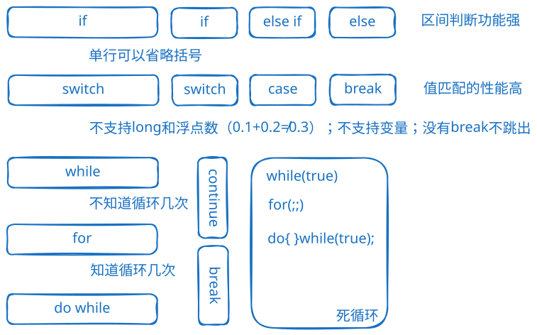

程序从上到下逐行执行，是最基本的控制结构。
if (condition) {
// 代码块
}
注意：如果只有一行代码，可以不写大括号（但不推荐）。
if (condition) {
// 代码块1
} else {
// 代码块2
}
示例：判断闰年
int year = 2024;
if ((year % 4 == 0 && year % 100 != 0) || year % 400 == 0) {
System.out.println("闰年");
} else {
System.out.println("平年");
}
if (condition1) {
// 代码块1
} else if (condition2) {
// 代码块2
} else if (condition_n) {
// 代码块n
} else {
// 默认代码块
}
if语句可以嵌套使用，但建议不要超过三层嵌套。
减少嵌套的方法：
while (condition) {
if (flag) continue; // 跳过当前迭代
// 其他代码
}
switch (表达式) {
case 常量1:
语句块1;
break;
case 常量2:
语句块2;
break;
// ...
case 常量n:
语句块n;
break;
default:
默认语句块;
break;
}
// 错误示例：不支持double
double num = 1.1;
switch (num) { // 编译错误
case 1.1:
// ...
}
// 正确示例：char可以，但要注意类型匹配
char c = 'a';
switch (c) {
case "a": // 错误：字符串不能匹配char
case 20: // 正确：char可以匹配整型常量
}
int j = 2;
switch (n) {
case j: // 错误：不能是变量
case 1 + 1: // 正确：常量表达式
}
int month = 4;
String season = switch (month) {
case 12, 1, 2 -> "冬季";
case 3, 4, 5 -> "春季";
case 6, 7, 8 -> "夏季";
case 9, 10, 11 -> "秋季";
default -> "无效月份";
};
int dayNumber = switch (day) {
case "MON" -> 1;
case "TUE" -> 2;
case "WED" -> 3;
case "THU" -> 4;
case "FRI" -> 5;
case "SAT" -> 6;
case "SUN" -> 7;
default -> 0;
};
String day = "MON";
String dayDescription = switch (day) {
case "MON" -> {
System.out.println("一周的开始");
yield "星期一";
}
case "TUE" -> "星期二";
// ... 其他cases
default -> "未知";
};
for (循环变量初始化; 循环条件; 循环变量迭代) {
语句块;
}
特点：
for (;;) 表示死循环（两个分号不能省略）while (循环条件) {
循环体;
循环变量迭代;
}
do {
循环体;
循环变量迭代;
} while (循环条件);
示例：统计1-200之间能被5整除但不能被3整除的数
public class Demo {
public static void main(String[] args) {
int i = 1;
int count = 0;
do {
if (i % 5 == 0 && i % 3 != 0) {
System.out.println(i);
count++;
}
i++;
} while (i <= 200);
System.out.println("count = " + count);
}
}
建议不要超过三层嵌套。
示例1：九九乘法表
public class Demo {
public static void main(String[] args) {
for (int i = 1; i < 10; i++) {
for (int j = 1; j <= i; j++) {
System.out.print(i + " * " + j + " = " + (i * j) + "\t");
}
System.out.println();
}
}
}
示例2：空心金字塔
public class Demo {
public static void main(String[] args) {
int height = 5;
// 上半部分（三角形）
for (int i = 1; i <= height - 1; i++) {
// 左边空格
for (int j = 0; j < height - i; j++) {
System.out.print(" ");
}
// 左边星号
System.out.print("*");
// 中间空格
for (int k = 1; k < 2 * (i - 1); k++) {
System.out.print(" ");
}
// 右边星号（第一行除外）
if (i != 1) {
System.out.print("*");
}
// 右边空格
for (int j = 0; j < height - i; j++) {
System.out.print(" ");
}
System.out.println();
}
// 底部（最后一行）
for (int i = 0; i < 2 * height - 1; i++) {
System.out.print("*");
}
}
}
用于跳出当前循环或switch语句。
带标签的break：
label1:
for (int j = 0; j < 4; j++) {
label2:
for (int i = 0; i < 10; i++) {
if (i == 2) break label1; // 跳出外层循环
System.out.println("i=" + i + " j=" + j);
}
}
// 输出：
// i=0 j=0
// i=1 j=0
跳过当前循环的剩余部分，继续下一次迭代。
带标签的continue：
label1:
for (int j = 0; j < 4; j++) {
label2:
for (int i = 0; i < 10; i++) {
if (i == 2) continue label1; // 跳过外层循环的当前迭代
System.out.println("i=" + i + " j=" + j);
}
}
// 输出：
// i=0 j=0
// i=1 j=0
// i=0 j=1
// i=1 j=1
// i=0 j=2
// i=1 j=2
// i=0 j=3
// i=1 j=3
跳出所在方法，结束方法的执行。